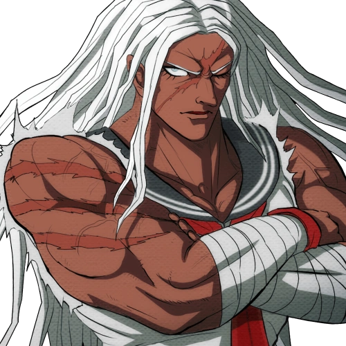
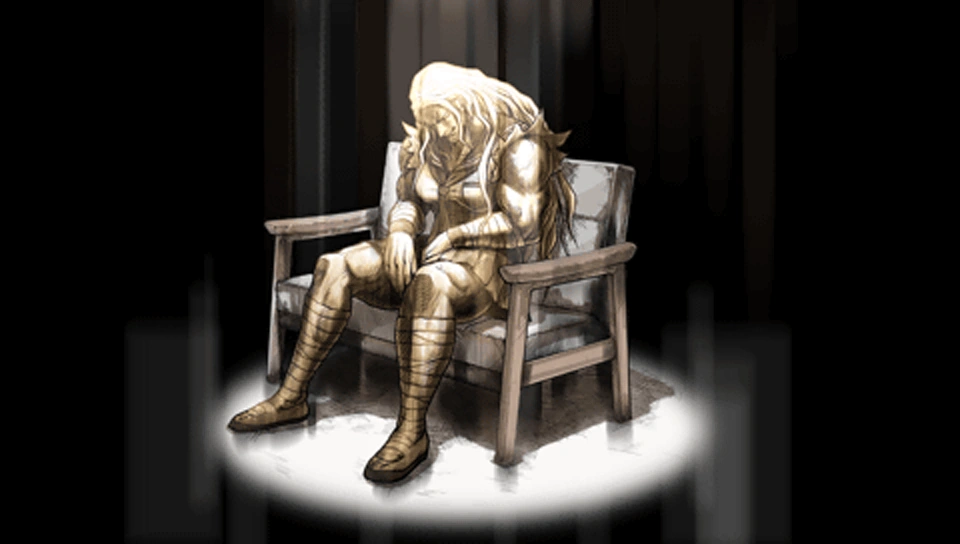

Sakura Ogami
Aviso de spoilers: Esta ficha incluye el destino del personaje en Danganronpa: Trigger Happy Havoc.
Datos
- Nombre japonés
- 大神 さくら
- Talento
- Luchadora definitiva
- Rol
- Estudiante
- Cumpleaños
- 13 de septiembre
- Grupo sanguíneo
- A
- Altura
- 192 cm
Gustos
Le gusta
- Las artes marciales
No le gusta
- Las peleas cobardes o injustas
Descripción
Una artista marcial de gran fuerza que valora profundamente el honor y la amistad.

Destino
- Estado
- Muere
- Capítulo
- 4
- Papel final
- Suicidio
- Contexto
- Se sacrifica; no hay un culpable de asesinato en el juicio.

Más información en la página de Sakura Ogami en Danganronpa Fandom (se abre en una pestaña nueva). Volver al catálogo.